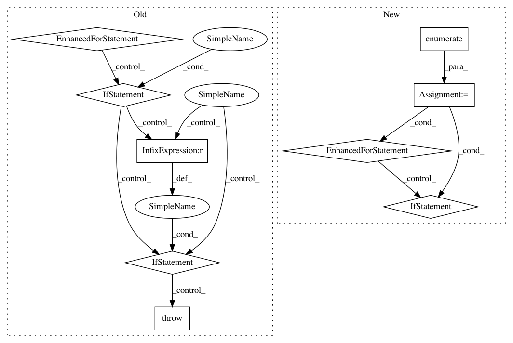

a32b6ba661206b12841e0a7cf8abb16ab0782f0a,skbio/io/dm.py,,_dm_to_matrix,#Any#Any#Any#,149
Before Change
// empty/whitespace-only lines throughout the data matrix. We want
// to ignore those and only count the actual rows of data.
curr_row_idx = 0
for line in fh:
line = line.strip()
if not line:
continue
elif curr_row_idx >= num_ids:
// We"ve hit a nonempty line after we already filled the
// data matrix. Raise an error because we shouldn"t ignore
// extra data.
raise DMFormatError(
"Encountered extra row(s) without corresponding IDs in "
"the header.")
tokens = line.split(delimiter)
// -1 because the first element contains the current ID.
if len(tokens) - 1 != num_ids:
raise DMFormatError(
"There are %d value(s) in row number %d, which is not"
" equal to the number of ID(s) in the header (%d)."
% (len(tokens) - 1, curr_row_idx + 1, num_ids))
curr_id = tokens[0].strip()
expected_id = ids[curr_row_idx]
if curr_id == expected_id:
data[curr_row_idx, :] = np.asarray(tokens[1:], dtype=float)
else:
raise DMFormatError(
"Encountered mismatched IDs while parsing the "
"dissimilarity matrix file. Found "%s" but expected "
""%s". Please ensure that the IDs match between the "
"dissimilarity matrix header (first row) and the row "
"labels (first column)." % (curr_id, expected_id))
curr_row_idx += 1
if curr_row_idx != num_ids:
raise DMFormatError(
"Expected %d row(s) of data, but found %d." % (num_ids,
curr_row_idx))
After Change
data = np.empty((num_ids, num_ids), dtype=np.float64)
row_idx = -1
for row_idx, (row_id, row_data) in enumerate(_parse_data(fh, delimiter)):
if row_idx >= num_ids:
// We"ve hit a nonempty line after we already filled the data
// matrix. Raise an error because we shouldn"t ignore extra data.
raise DMFormatError(
"Encountered extra row(s) without corresponding IDs in "
"the header.")
num_vals = len(row_data)
if num_vals != num_ids:
raise DMFormatError(
"There are %d value(s) in row number %d, which is not "
"equal to the number of ID(s) in the header (%d)."
% (num_vals, row_idx + 1, num_ids))
expected_id = ids[row_idx]
if row_id == expected_id:
data[row_idx, :] = np.asarray(row_data, dtype=float)
else:
raise DMFormatError(
"Encountered mismatched IDs while parsing the "
"dissimilarity matrix file. Found "%s" but expected "
""%s". Please ensure that the IDs match between the "
"dissimilarity matrix header (first row) and the row "
"labels (first column)." % (row_id, expected_id))
if row_idx != num_ids - 1:
raise DMFormatError(
"Expected %d row(s) of data, but found %d." % (num_ids, row_idx + 1))
In pattern: SUPERPATTERN
Frequency: 3
Non-data size: 9
Instances
Project Name: biocore/scikit-bio
Commit Name: a32b6ba661206b12841e0a7cf8abb16ab0782f0a
Time: 2014-08-25
Author: jai.rideout@gmail.com
File Name: skbio/io/dm.py
Class Name:
Method Name: _dm_to_matrix
Project Name: senarvi/theanolm
Commit Name: 1167a9006becd15490004c167ac8eab22521513a
Time: 2017-10-16
Author: seppo.git@marjaniemi.com
File Name: theanolm/network/additionlayer.py
Class Name: AdditionLayer
Method Name: __init__
Project Name: senarvi/theanolm
Commit Name: bcf723a2f67a372e6b03a453149a82ecf2766fff
Time: 2015-12-24
Author: seppo.git@marjaniemi.com
File Name: theanolm/network.py
Class Name: Architecture
Method Name: check_state